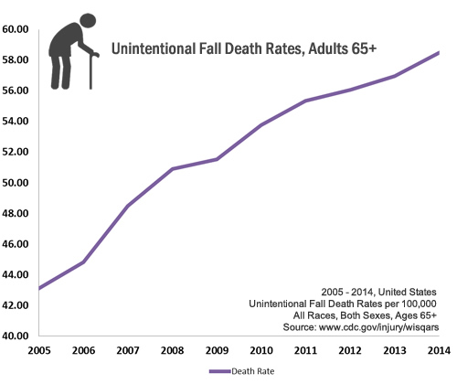

Important Facts about Falls
 ShareCompartir
ShareCompartir
Each year, millions of older people—those 65 and older—fall. In fact, more than one out of four older people falls each year, but less than half tell their doctor.1 Falling once doubles your chances of falling again.2
Falls Are Serious and Costly 
- One out of five falls causes a serious injury such as broken bones or a head injury.3,4
- Each year, 2.8 million older people are treated in emergency departments for fall injuries.5
- Over 800,000 patients a year are hospitalized because of a fall injury, most often because of a head injury or hip fracture.5
- Each year at least 300,000 older people are hospitalized for hip fractures.6
- More than 95% of hip fractures are caused by falling,7 usually by falling sideways.8
- Falls are the most common cause of traumatic brain injuries (TBI).9
- Adjusted for inflation, the direct medical costs for fall injuries are $31 billion annually.10 Hospital costs account for two-thirds of the total.
What Can Happen After a Fall?
Many falls do not cause injuries. But one out of five falls does cause a serious injury such as a broken bone or a head injury.3,4 These injuries can make it hard for a person to get around, do everyday activities, or live on their own.
- Falls can cause broken bones, like wrist, arm, ankle, and hip fractures.
- Falls can cause head injuries. These can be very serious, especially if the person is taking certain medicines (like blood thinners). An older person who falls and hits their head should see their doctor right away to make sure they don’t have a brain injury.
- Many people who fall, even if they’re not injured, become afraid of falling. This fear may cause a person to cut down on their everyday activities. When a person is less active, they become weaker and this increases their chances of falling.11
What Conditions Make You More Likely to Fall?
Research has identified many conditions that contribute to falling. These are called risk factors. Many risk factors can be changed or modified to help prevent falls. They include:
- Lower body weakness
- Vitamin D deficiency (that is, not enough vitamin D in your system)
- Difficulties with walking and balance
- Use of medicines, such as tranquilizers, sedatives, or antidepressants. Even some over-the-counter medicines can affect balance and how steady you are on your feet.
- Vision problems
- Foot pain or poor footwear
- Home hazards or dangers such as
- broken or uneven steps,
- throw rugs or clutter that can be tripped over, and
- no handrails along stairs or in the bathroom.
Most falls are caused by a combination of risk factors. The more risk factors a person has, the greater their chances of falling.
Healthcare providers can help cut down a person’s risk by reducing the fall risk factors listed above.
What You Can Do to Prevent Falls
Falls can be prevented. These are some simple things you can do to keep yourself from falling.
Talk to Your Doctor
- Ask your doctor or healthcare provider to evaluate your risk for falling and talk with them about specific things you can do.
- Ask your doctor or pharmacist to review your medicines to see if any might make you dizzy or sleepy. This should include prescription medicines and over-the counter medicines.
- Ask your doctor or healthcare provider about taking vitamin D supplements.
Do Strength and Balance Exercises
Do exercises that make your legs stronger and improve your balance. Tai Chi is a good example of this kind of exercise.
Have Your Eyes Checked
Have your eyes checked by an eye doctor at least once a year, and be sure to update your eyeglasses if needed.
If you have bifocal or progressive lenses, you may want to get a pair of glasses with only your distance prescription for outdoor activities, such as walking. Sometimes these types of lenses can make things seem closer or farther away than they really are.

Make Your Home Safer
- Get rid of things you could trip over.
- Add grab bars inside and outside your tub or shower and next to the toilet.
- Put railings on both sides of stairs.
- Make sure your home has lots of light by adding more or brighter light bulbs.
Additional Resources
 For more information about how you can prevent falls, check out some of our online STEADI resources for older adults.
For more information about how you can prevent falls, check out some of our online STEADI resources for older adults.
These resources include:
Related Pages
- Costs of Falls Among Older Adults
- Hip Fractures Among Older Adults
- CDC Compendium of Effective Fall Interventions: What Works for Community-Dwelling Older Adults, 3rd Edition
- Preventing Falls: A Guide to Implementing Effective Community-Based Fall Prevention Programs
- Publications and Resources
- Stopping Elderly Accidents, Deaths & Injuries (STEADI)
References
- Stevens JA, Ballesteros MF, Mack KA, Rudd RA, DeCaro E, Adler G. Gender differences in seeking care for falls in the aged Medicare Population. Am J Prev Med 2012;43:59–62.
- O’Loughlin J et al. Incidence of and risk factors for falls and injurious falls among the community-dwelling elderly. American journal of epidemiology, 1993, 137:342-54.
- Alexander BH, Rivara FP, Wolf ME. The cost and frequency of hospitalization for fall–related injuries in older adults. American Journal of Public Health 1992;82(7):1020–3.
- Sterling DA, O'Connor JA, Bonadies J. Geriatric falls: injury severity is high and disproportionate to mechanism. Journal of Trauma–Injury, Infection and Critical Care 2001;50(1):116–9
- Centers for Disease Control and Prevention, National Center for Injury Prevention and Control. Web–based Injury Statistics Query and Reporting System (WISQARS) [online]. Accessed August 5, 2016.
- HCUPnet. Healthcare Cost and Utilization Project (HCUP). 2012. Agency for Healthcare Research and Quality, Rockville, MD. http://hcupnet.ahrq.gov. Accessed 5 August 2016..
- Hayes WC, Myers ER, Morris JN, Gerhart TN, Yett HS, Lipsitz LA. Impact near the hip dominates fracture risk in elderly nursing home residents who fall. Calcif Tissue Int 1993;52:192-198.
- Parkkari J, Kannus P, Palvanen M, Natri A, Vainio J, Aho H, Vuori I, Järvinen M. Majority of hip fractures occur as a result of a fall and impact on the greater trochanter of the femur: a prospective controlled hip fracture study with 206 consecutive patients. Calcif Tissue Int, 1999;65:183–7.
- Jager TE, Weiss HB, Coben JH, Pepe PE. Traumatic brain injuries evaluated in U.S. emergency departments, 1992–1994. Academic Emergency Medicine 2000&359;7(2):134–40.
- Burns EB, Stevens JA, Lee RL. The direct costs of fatal and non-fatal falls among older adults—United States. J Safety Res 2016:58.
- Vellas BJ, Wayne SJ, Romero LJ, Baumgartner RN, Garry PJ. Fear of falling and restriction of mobility in elderly fallers. Age and Ageing 1997;26:189–193.

- Page last reviewed: September 20, 2016
- Page last updated: September 20, 2016
- Content source:
- Centers for Disease Control and Prevention,
- National Center for Injury Prevention and Control,
- Division of Unintentional Injury Prevention